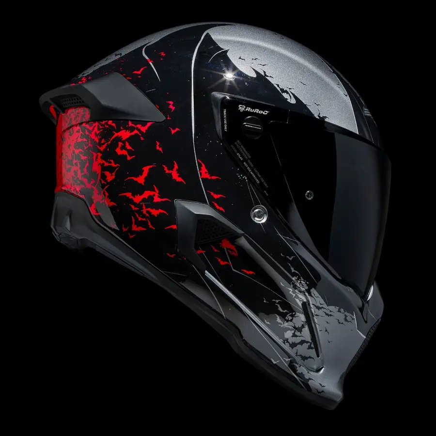
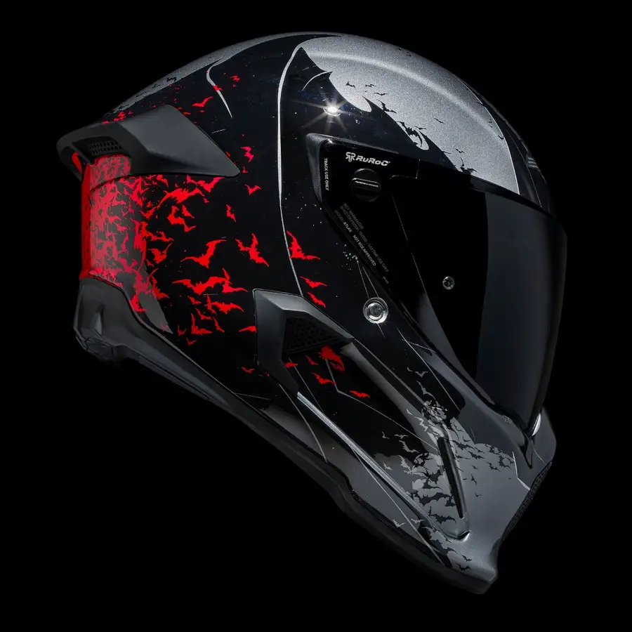
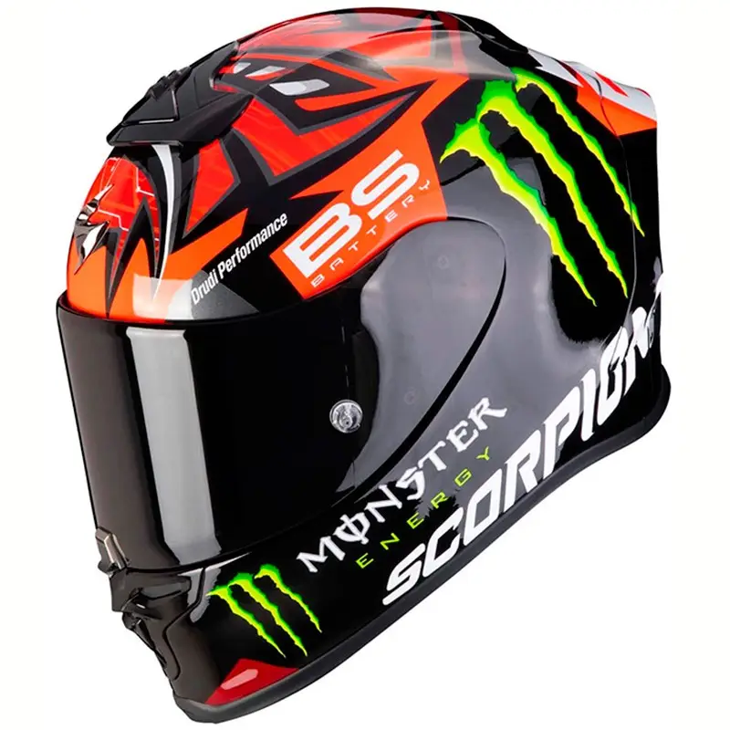
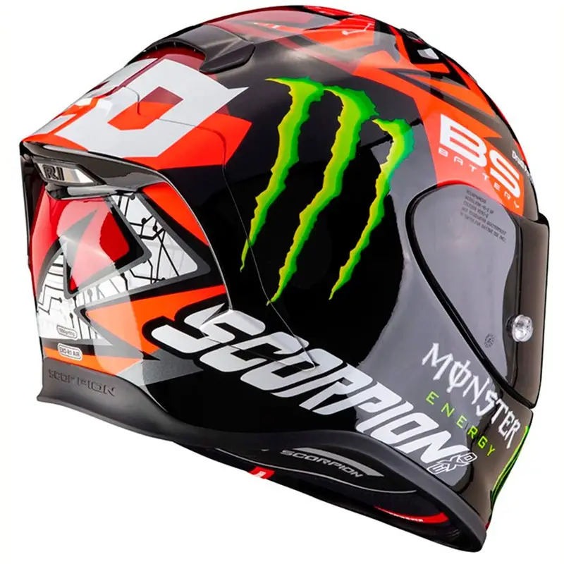
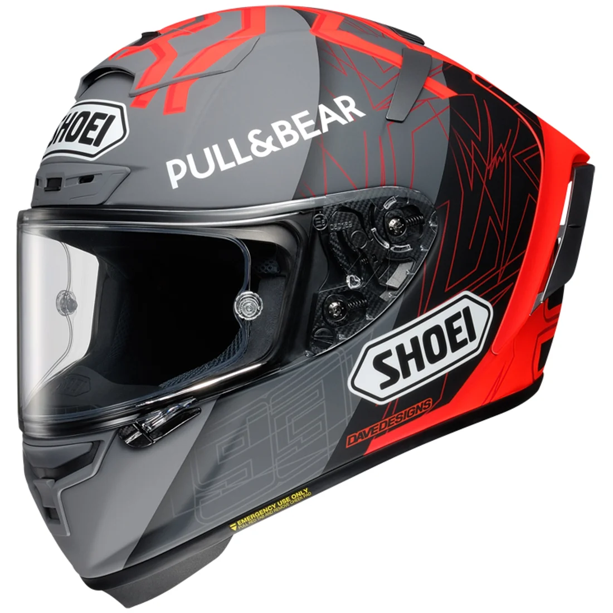
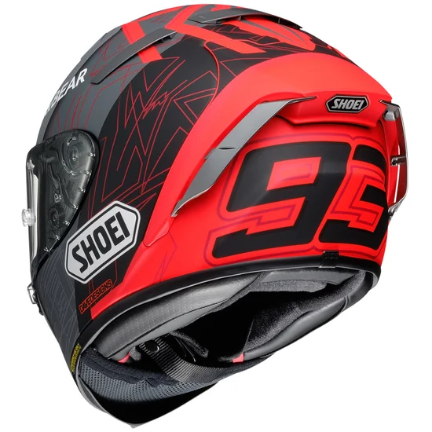

HELMETS SHOP
Casco ATLAS 4.0 - Batman
 

El casco de moto integral ATLAS 4.0 The Batman cuenta con un elegante acabado de aluminio y la icónica silueta
del mismísimo Batman, este casco acecha en la oscuridad con verdadero estilo. Engalanado con un enjambre caótico
de murciélagos y con una trasera roja audaz, este diseño realmente le da vida a Vengeance.
El ATLAS 4.0 luce excelente ECE 22.06 certificación de seguridad y el estándar DOT más reciente que le
proporciona una seguridad mejorada y comodidad, mientras tomas las calles como The Batman. Con nuestras nuevas
almohadillas premium para las mejillas que absorben el sudor y que contienen múltiples capas de espuma de
densidad múltiple, el ATLAS 4.0 nunca se ha sentido más cómodo. En caso de que desee lavar los revestimientos de
su casco, puede quitar completamente las capas de espuma del interior de las almohadillas para las mejillas para
mejorar aún más la longevidad de los revestimientos del casco.
El cartel principal de ATLAS 4.0 incluye
Tecnología RHEON™ para una mejor resistencia al impacto. RHEON™ es un polímero reactivo que es un fluido no
newtoniano que funciona para reducir las fuerzas de impacto lineales y rotacionales. Se encuentra entre la
espuma del revestimiento del techo y el EPS para actuar como una capa adicional de protección que ofrece una
disipación de energía específica en caso de accidente.
La carcasa de fibra de carbono de nuevo diseño ofrece una experiencia más aerodinámica y silenciosa debido a la
eliminación de varias ventilaciones que estaban ubicadas en la parte superior del casco. Ahora solo encontrará
una ventilación de barbilla y una ventilación superior delantera, las cuales son totalmente ajustables para que
pueda controlar el clima de su casco con un total de 4 configuraciones de flujo de aire para un mejor control de
temperatura en ambientes cálidos y fríos.
El ATLAS 4.0 es el casco de motocicleta más silencioso de Ruroc nunca, pero ¿por qué no mejorar la funcionalidad
y el entretenimiento y actualizarlo a un casco de motocicleta Bluetooth con nuestro Inserto Bluetooth Shockwave™
Ruroc Atlas 4.0 BATMAN
Casco Scorpion Exo-R1 Réplica Quartararo


Casco Scorpion Exo-R1 Air Fabio Quartararo Monster Replica Negro Mate / Rojo. El Exo-R1 Air es el nuevo casco
integral deportivo de Scorpion. Se trata de un casco muy ligero fabricado con estructura Ultra TCT
(Thermodynamical Composite Technology), que proporciona una protección excepcional contra los impactos. Dispone
de acolchado interior Kwikwick3, sistema Airfit™ y mecanismo de pantalla Ellip-Tec® II. Destaca por su estética
deportiva. El Exo-R1 Air se entrega con una segunda pantalla ahumada oscura con predisposición para Pinlock®
Maxvision.
Sistema Airfit
El sistema Airfit™, a través de una bomba situada cerca de la barbilla, permite inflar y desinflar los
acolchados laterales, proporcionando un ajuste perfecto a la forma de la cara y reduciendo el nivel de ruido
(sistema exclusivo de Scorpion Exo).
Pinlock® Maxvision
Perfectamente integrado en la pantalla, este Pinlock® crea una presión de aire permanente e impide así que se
forme condensación, incluso cuando la diferencia de temperatura entre el exterior y el interior del casco
aumenta.
Kwikwick3®
Acolchado interior Kwikwick3® con tratamiento antialérgico. Ofrece una excelente absorción de la humedad y
destaca por ser muy cómodo, suave y elástico. Puede desmontarse y lavarse. Diseño de los acolchados laterales
optimizado para usuarios de gafas.
Ultra TCT® (Thermodynamical Composite Technology)
Calota extremadamente ligera con nueva estructura TCT fabricada en fibra de vidrio; ofrece un nivel de
protección nunca antes visto en el mundo de los cascos. Esta elegante calota es capaz de doblarse gradualmente
en caso de impacto, lo que le permite absorber la mayoría de energía generada por el mismo, mientras conserva
una de las estructuras más fuertes.
Sistema de pantalla Ellip-Tec® II
Con el mecanismo de pantalla Ellip-Tec® aún es más la fácil y rápido el cambio de pantalla. Se realiza sin
dificultades en menos de 10 segundos, con la pantalla abierta. Concebido en túnel aerodinámico para limitar al
máximo los ruidos a altas velocidades, equipado con resortes más potentes para un ajuste óptimo de la pantalla,
totalmente hermético y más silencioso. Ellip-Tec® ofrece además una mayor resistencia para mantener la pantalla
en su sitio en caso de caída. Dispone de un nuevo sistema de cierre central: pulsando solamente la leva del
cierre hasta arriba, ésta se desbloqueará y la podremos alzar sin problemas.
Casco SCORPION Quartararo
Casco SHOEI X-Spitit 3 MM93


Casco Shoei X-Spirit 3 MM93 Black Concept 2.0 TC-1. Cuando hablamos de un casco Shoei de competición, pensamos
en Marc Márquez y es que el piloto del 93 ha sido el máximo exponente de la marca en los últimos años. La
tercera generación del X-Spirit es el resultado de la experiencia adquirida en Grandes Premios y de lo que no
cabe duda, es que los ingenieros de Shoei han tomado buena nota de las indicaciones de sus pilotos.
Características técnicas:
Seguridad:
La calota exterior (estructura externa) está construida en AIM+ (Advanced Integrated Matrix): fibra orgánica y multi-compuesto de fibras de varias capas ofrecen una calota que absorbe los impactos con una rigidez óptima.
La calota interior (estructura interior) está realizada en EPS de diferentes densidades que ofrece un alto grado de absorción a los impactos.
La pantalla CWR-F con sistema antivaho Pinlock ha sido diseñada para el correcto ajuste de las láminas de Tear-Off. Esta nueva pantalla incorpora también unos pequeños generadores de vórtice, hecho que optimiza el flujo de aire hacia los deflectores traseros del casco, ofreciendo una mayor estabilidad a altas velocidades y reduciendo la resistencia aerodinámica.
Sistema de cierre de doble hebilla (Doble D).
Incorpora el sistema EQRS (Emergency Quick Release System), que facilita la extracción del casco desde fuera en caso de accidente mediante la extracción de los acolchados laterales.
Confort:
4 tamaños de calota exterior para un mejor ajuste a cada talla.
Acolchados laterales tridimensionales para una mayor comodidad.
Sistema de ajuste modular en el acolchado central.
Interior totalmente desmontable y lavable.
Ventilación:
El sistema de ventilación consta de 6 entradas de aire regulables y 6 salidas.
Nuevo sistema de ventilación en los acolchados laterales; El aire fluye por los acolchados de las mejillas refrescando el interior y evacuando mejor el sudor.
Aerodinámica:
Shoei ha desarrollado el Shoei X-Spirit 3 en el túnel de viento, con velocidades de hasta 240km/h.
Dispone de un spóiler trasero integrado que actúa como estabilizador con pequeños alerones reemplazables.
Spoiler en la barbillera que controla el flujo de aire en la parte baja del casco.
Otras características:
Incorpora de serie un cubrenariz y un cubrebarbilla, así como una funda para su transporte.
Casco SHOEI MM93